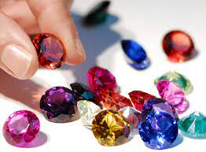

A distinção entre pedras preciosas e semipreciosas nunca teve validade científica. Atualmente todas as pedras, tanto minerais como rochas, apreciadas por sua beleza, durabilidade e raridade, devem ser denominadas de gemas.
Para entender como ocorreu esta modificação é necessário conhecer um pouco sobre o histórico das gemas. A denominação pedra preciosa era utilizada apaenaspara o diamante, a esmeralda, o rubi e a safira, conhecidas como gemas cardinais, pois estas possuíam uso eclesiástico, devocional ou cerimonial; as demais gemas eram denominadas de semipreciosas.
Porém este termo é discutível e confuso, e desvaloriza gemas como a opala, a água-marinha, o crisoberilo, a ametista ou a alexandrita, entre outras pedras brasileiras de grande beleza. Assim, a distinção entre pedras preciosas e semipreciosas deve ser evitada, usando-se o termo gema.
